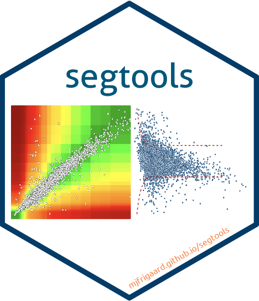
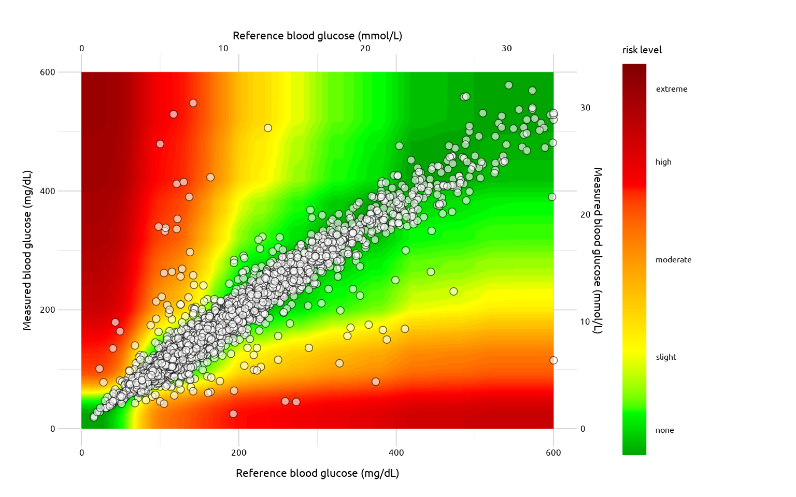

segtools provides the underlying functions and calculations for The Surveillance Error Grid shiny application.
For more information, see the original paper:
Klonoff, David C., Courtney Lias, Robert Vigersky, William Clarke, Joan Lee Parkes, David B. Sacks, M. Sue Kirkman, et al. 2014. “The Surveillance Error Grid.” Journal of Diabetes Science and Technology 8 (4): 658–72. https://doi.org/10.1177/1932296814539589
Installation
You can install the development version of segtools from GitHub with:
# install.packages("remotes")
remotes::install_github("mjfrigaard/segtools")Previous work
The previous shiny applications are stored in the Quesgen GitHub repositories:
SEG Graph
The SEG graph can be created from a dataset with BGM and REF values:
library(segtools)
library(vroom)
# import data
test_data <- vroom::vroom(
file =
system.file("extdata", "VanderbiltComplete.csv",
package = "segtools"), delim = ",")
# plot
segtools::seg_graph(
data = test_data
)
Read more here.